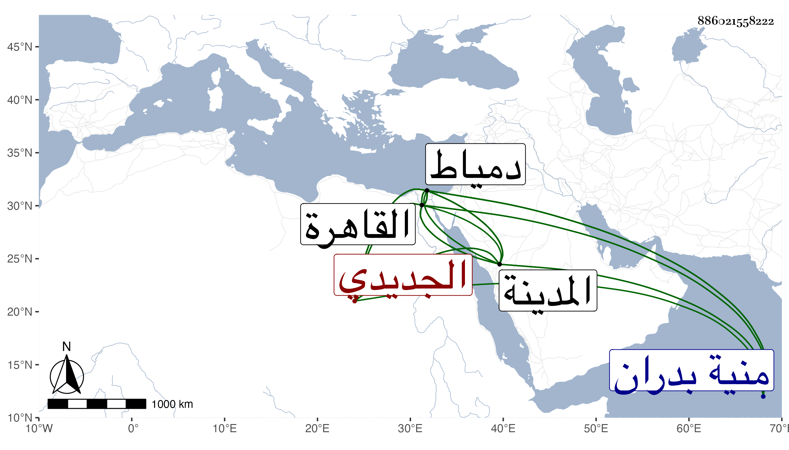

0902Sakhawi.DawLamic.ITO20230111-ara1.EIS1600.886021558222
Biography ID: 886021558222
أحمد بن أحمد بن علي بن زكريا الشهاب بن الشيخ شهاب الدين الجديدي بضم الجيم ثم دال مهملة مفتوحة بعدها تحتانية مشددة مكسورة ثم مهملة نسبة لقرية من قرى منية بدران لكون أصله منها البدراني الشافعي نزيل دمياط والآتي أبوه . ولد في مستهل المحرم سنة تسع عشرة وثمانمائة بمنية بدران ونشأ بها فحفظ القرآن عند والده والمنهاج والجرومية وبعض ألفية ابن مالك وقدم القاهرة فحضر القاياتي وغيره كالعلم البلقيني في الفقه وكذا أخذ الفقه بالمدينة النبوية حين إقامته بها نحو ثلث سنة لما حج في سنة سبع وثلاثين عن الجمال الكازروني والعربية عن الشهاب البجائي والحديث وغيره عن شيخنا وسمع عليه وعلى الزين الزركشي والكازروني والنور المحلى سبط الزبير وطاهر الخجندي وطائفة بالقاهرة والمدينة وقطن دمياط من سنة سبع وخمسين وتصدى فيها للتدريس فانتفع بها جماعة وقصد بالفتاوى من تلك النواحي وعمل على الجرومية شرحا مطولا ومختصرا لم يكملا وكذا شرع في مقدمة الحناوي في النحو ولعله أخذ عنه وفي شرح جامع المختصرات وله النصيحة الرابحة لذوي العقول الراجحة وغير ذلك وأنشأ الخطب والرسائل نظما ونثرا وفي ذلك ما يوصف بالجودة ، وولي مشيخة المعينية المستجدة بدمياط وكان فاضلا مشاركا ذكيا قادرا على التعبير عن مراده متين الكتابة متوددا كريما كثير السكوت والاحتمال قليل التشكي وهو ممن كتب في كائنة ابن الفارض ولم يكن يعتمد فيما يقع له من الحيدث غيري ومدحني نظما ونثرا . مات بدمياط في حادي عشر ربيع الآخر سنة ثمان وثمانين رحمه الله وإيانا .
